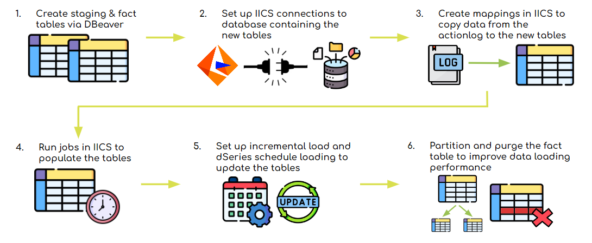

The purpose of this project is to gain some insights on how Spotfire is being used and what we can do to improve its performance. We used Spotfire action log data to identify the types of actions being done and the usage of data sources and dashboards, which help to indicate where the problems in performance are coming from.
MORE >
Analytics Platform Assessment
This project aims to find the platforms and tools that will best streamline processes for the company’s project work and evolve its Analytics platform. Doing so reduces the need to use many individual applications, while achieving the same goals. My workstream specifically studies the vendors from a Data Engineering standpoint.
MORE >
Spotfire Ingest Project
Data Engineering Pipelines
Background
Many employees at JMS use Spotfire to create and access dashboards. However, there have been problems with the application's slow performance. This issue is caused by the sheer amount of data coming into the application, existing number of files or duplicates, and number of actions being done on the application. To identify the specifics of this problem, we utilized the Spotfire action log to track the usage of different dashboards and types of actions being made. By doing this, we will be able to pinpoint and remove irrelevant files. The whole process is outlined below.
Data Engineering
Data engineering pipelines are created to copy over Spotfire action log data to a new table in an Oracle CNR database. This table is updated daily instead of in real-time to reduce the amount of time taken to access the data.
Data Virtualization
Use data virtualization to prepare and refine the data table in TDV, making it ready for use for data and business analysts.
Data Science
Perform exploratory data analysis on the action log data. Gain some insights by creating visualizations as well as using predictive modeling.
Continue
Finding
Insights
My Roles
I set up data engineering pipelines for creating a new data table in a new database to store records of the action log. I mainly used Informatica and DBeaver to do this.
I coordinated weekly check-in meetings with my team and additional meetings with anyone else whom we needed help from.
I helped with the data science aspect of the project as I would like to have more experience in practicing my data science skills. This involved brainstorming ideas on what transformations to make, what visualizations to create, etc.
The flowchart below illustrates my process of setting up the Data Engineering pipelines. I first used DBeaver, a database management tool, to create the staging and fact table with SQL scripts. The staging table is used to only keep the latest records after every load, while the fact table contains all records. For the main pipelines, I primarily used Informatica Intelligent Cloud Services (IICS), a data integration tool. I set up mappings from the action log to the staging table, which ultimately connects to the fact table. These mappings are used to run jobs on IICS to regularly update the tables. Once the jobs are running successfully, I used dSeries to automate the daily schedule loading process. To speed up loading performance of the tables, I partitioned them into smaller tables by year and month. In addition, I will also purge the table or only keep a year’s worth of data.

While the data pipelines were being set up, I worked with another intern on this project to come up with different visualizations that we could create for exploratory data analysis (EDA). As the records are separated into categories that each contain different action types, we focused on the get_data action in the info_link category. This action indicates which dashboards are being accessed, the frequency of the action, and the duration of the action. The most useful ideas that we had are seen below.
To attempt to predict the usage of different Spotfire dashboards, another intern and I brainstormed ideas on what types of models and features we could use. I helped research the implementation of the models. Some example models that we experimented with are named below.
There are still a lot of opportunities to work on the data such as studying action types other than dashboard access and experimenting with different models.
Impact of Project
The Spotfire action log data is now accessible through Spotfire DEV, which allows us to create visualizations and models within the application. Doing so makes it easier to work with the data that is updated regularly. Setting up the data pipelines to a new data table will reduce the load time to access the data compared to accessing the original action log. Overall, all Spotfire users will mainly require less time to load dashboards or files or do certain actions when we come up with solutions.
Analytics Platform Assessment
Data Engineering Workstream
Background
In current projects, employees are using many different applications to execute separate data processes. Having to pass on projects from one application to another, combined with growing data demands, has slowed down progress. To improve speed and agility, the company is looking to transition to the cloud. Other than cloud migration, the company is also planning to evolve its Analytics tech stack to better suit business needs.
The assessment is divided up into 7 workstreams that each focus on a certain aspect of data handling. The workstreams all come together to choose a unified platform, along with a few additional tools, that best fits our needs. The timeline of the project is outlined below.
RFIs and Demos
Request For Information (RFI) documents are sent to vendors to collect information about their products. The vendors’ RFI responses are reviewed and scored against our criteria. Vendors also run demo meetings in which they go through their offerings with the Smucker team.
Choose a Unified Platform
Once every workstream has done an initial assessment, a unified platform that meets most of the company’s needs is chosen. The vendors being considered at this stage are those that provide the most capabilities required in one platform.
Choose Additional Supporting Tools for each Workstream
To fulfill the remaining needs of each workstream, additional vendors or partners of the unified platform may be assessed and chosen.
Improved
Working
Ecosystem
The Data Engineering workstream is responsible for comparing vendors’ Extract, Transform, Load / Extract, Load, Transform (ETL / ELT) tech offerings. Our objective is to focus on improving delivery & performance speed and enable on-request business needs.
My Roles
As I learned studied basic Cloud and Data Engineering concepts, I made notes that will later be shared as documentation for on-boarding employees.
I joined meetings on the APA Data Engineering workstream and vendors’ demos of their products. During team meetings, we created the criteria to assess the vendors on and had RFI reviews.
I worked with my manager to write proof of value (POV) use cases specific to maintenance and support. These use cases are example scenarios that vendors will be asked to demonstrate on their applications.
To get a better idea of how the Cloud works and how Data Engineering connects with it, I first went through the on-boarding process to study the basic concepts. As I was going through the training slides, I wrote notes and created tables to accompany the videos. An example table is seen below.
Our workstream is evaluating the following vendors for Data Engineering capabilities:
As I went through the training, our workstream developed a decision analysis criterion to assess, score, and compare the vendors. All requirements in the criterion were divided into “needs” and “wants” and weighted in terms of importance. This weighting determines the scoring system, which will quantitatively decide which vendor is best for our workstream. The categories of the criterion are detailed on the right.
After developing the criterion, the RFIs from all vendors were divided among the employees to review and summarize in terms of the criterion. Everyone also attended demo meetings for vendors to present their product. In these demos, the vendors gave an overview of their product set up and showed us how it is generally used. Later demo meetings will be scheduled as well to cater to specific workstreams. During meetings, everyone discussed their findings.
After initial RFIs reviews, we came up with a list of POV use cases to ask vendors. POVs are used to assess whether a product provides business value or not. I specifically worked with my manager to develop POV use cases for the mainenance & support category, making sure that our wording is clear and concise for vendors to understand.
This project is still ongoing as all workstreams have yet to decide on a unified platform and additional tools.
Impact of Project
The documentation that I created will help on-boarding employees with less background in cloud concepts to better understand different key terms. The POV use cases that we developed will determine the overall value of a vendor’s product from a Data Engineering standpoint. The assessment ensures that the company is considering all options thoroughly, minimizing potential issues in each workstream.